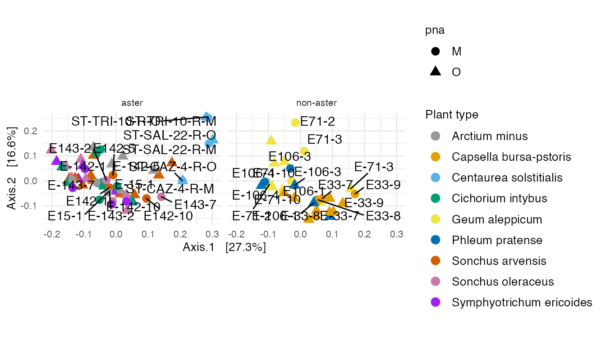
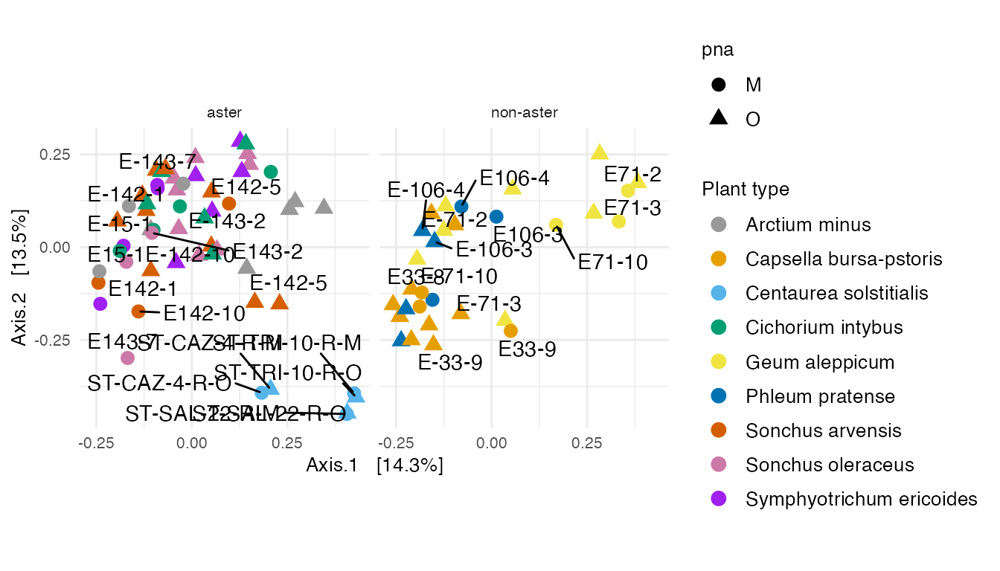

Section 7: MULTIVARIATE AND NETWORK ANALYSES
Pratheepa Jeganathan
22 February, 2021
07_multivariate_and_network_analysis.Rmd
library(phyloseq)
library(tidyverse)
library(genefilter) #KOverA
library(ggrepel) # geom_text_repel
library(randomcoloR)# distinctColorPalette(n)
devtools::load_all()
theme_set(theme_minimal())
theme_update(
text = element_text(size = 10),
legend.text = element_text(size = 10)
)Data
threshold <- kOverA(2, A = 25)
psE_BARBI <- phyloseq::filter_taxa(
psE_BARBI,
threshold, TRUE)
psE_BARBI## phyloseq-class experiment-level object
## otu_table() OTU Table: [ 1418 taxa and 86 samples ]
## sample_data() Sample Data: [ 86 samples by 16 sample variables ]
## tax_table() Taxonomy Table: [ 1418 taxa by 6 taxonomic ranks ]
## phy_tree() Phylogenetic Tree: [ 1418 tips and 1417 internal nodes ]
ps <- psE_BARBI
rm(psE_BARBI)
ps <- prune_taxa(taxa_sums(ps) > 0, ps)
ps## phyloseq-class experiment-level object
## otu_table() OTU Table: [ 1418 taxa and 86 samples ]
## sample_data() Sample Data: [ 86 samples by 16 sample variables ]
## tax_table() Taxonomy Table: [ 1418 taxa by 6 taxonomic ranks ]
## phy_tree() Phylogenetic Tree: [ 1418 tips and 1417 internal nodes ]Edit specimen names
We edit specimen names and identify Asteraceae and non-Asteraceae plants.
sam_names <- str_replace(sample_names(ps), "E106", "E-106")
sam_names <- str_replace(sam_names, "_F_filt.fastq.gz", "")
sam_names <- str_replace(sam_names, "Connor-", "E")
sample_names(ps) <- sam_names
sample_data(ps)$X <- sam_names
sample_data(ps)$unique_names <- sam_names
aster <- c("142","143","15","ST","22","40")
non_aster <- c("33", "71", "106")
paired_aster <- c("E-142-1", "E142-1", "E-142-5", "E142-5", "E-142-10", "E142-10", "E-143-2", "E143-2", "E-143-7", "E143-7", "E-15-1", "E15-1", "ST-CAZ-4-R-O", "ST-CAZ-4-R-M", "ST-SAL-22-R-O", "ST-SAL-22-R-M", "ST-TRI-10-R-O", "ST-TRI-10-R-M")
paired_non_aster <- c("E33-7", "E-33-7", "E33-8", "E-33-8", "E33-9", "E-33-9", "E71-10", "E-71-10","E71-2","E-71-2" ,"E71-3", "E-71-3", "E106-1", "E-106-1", "E106-3", "E-106-3", "E106-4", "E-106-4")
paired_specimens <- c(paired_aster, paired_non_aster)
# We will use 9 colors for 9 different plants
plant_colors <- c("#999999", "#E69F00", "#56B4E9", "#009E73", "#F0E442", "#0072B2", "#D55E00", "#CC79A7", "purple")7.1 Ordination
Multidimensional scaling (MDS) with weighted unifrac
ps_log <- transform_sample_counts(
ps,
function(x) log(1 + x)
)
out.wuf.log <- ordinate(
ps_log,
method = "MDS",
distance = "wunifrac"
)
evals <- out.wuf.log$values$Eigenvalues
mds_wuni <- plot_ordination(
ps_log,
out.wuf.log,
color = "species_names",
shape = "pna"
) +
labs(
col = "Plant type"
) +
coord_fixed(
sqrt(evals[2] / evals[1])
) +
scale_colour_manual(
values = plant_colors
) +
facet_grid(~Type) +
geom_point(size = 3)
# adding only paired-specimen names
df_paired <- mds_wuni$data %>%
dplyr::filter(
unique_names %in% paired_specimens
)
mds_wuni +
geom_text_repel(
data = df_paired,
aes(
x = Axis.1,
y = Axis.2,
label = unique_names
),
color = "black"
)
We see that Centaurea solstitialis specimens are outlier that were sampled in a field across three countries, while other plants are grown from seeds. We label the paired specimens in all plants. The paired specimens are relatively close to each other, except (E-143-7, E143-7), (E-142-5, E142-5), (E-71-2, E71-2), and (E-71-3, E71-3) that are in positive and negative axes of the first two principal axes.
Fitzpatrick et al. (2018) concluded that there is no effect in within and between specimen bacterial diversity when they used universal or Aster-modified pPNA types.
The above Figure shows that specimens from the aster plants that are paired with universal or Aster-modified pPNA types make clusters.
MDS with BC
An MDS plot using Bray-Curtis distance between specimens.
out.bc.log <- ordinate(
ps_log,
method = "MDS",
distance = "bray"
)
evals <- out.bc.log$values$Eigenvalues
mds_bc <- plot_ordination(
ps_log,
out.bc.log,
color = "species_names",
shape = "pna"
) +
coord_fixed(
sqrt(evals[2] / evals[1])
) +
labs(
col = "Plant type",
shape = "pna"
) +
scale_colour_manual(
values = plant_colors
) +
facet_grid(~Type) +
geom_point(size=3)
df_paired <- mds_bc$data %>%
dplyr::filter(
unique_names %in% paired_specimens
)
mds_bc +
geom_text_repel(
data = df_paired,
aes(x = Axis.1,
y = Axis.2,
label = unique_names
),
color = "black"
)
The ordination of specimens in MDS with BC is similar to MDS with weighted unifrac.
DPCoA
A DPCoA plot incorporates phylogenetic information.
The DPCoA specimens positions can be interpreted with respect to the ASVs coordinates in this display.
out.dpcoa.log <- ordinate(
ps_ans,
method = "DPCoA"
)
evals <- out.dpcoa.log$eig
dpcoa_sam <- plot_ordination(
ps_ans,
out.dpcoa.log,
color = "species_names",
shape = "pna"
) +
coord_fixed(
sqrt(evals[2] / evals[1])
) +
labs(
col = "Plant type",
shape = "pna"
) +
scale_colour_manual(
values = plant_colors
) +
facet_grid(~Type) +
geom_point(size = 3)
df_paired <- dpcoa_sam$data %>%
dplyr::filter(
unique_names %in% paired_specimens
)
dpcoa_sam +
geom_text_repel(
data = df_paired,
aes(
x = CS1,
y = CS2,
label = unique_names
),
color = "black"
)
dpcoa_taxa <- plot_ordination(
ps_ans,
out.dpcoa.log,
type = "species",
color = "Class"
)
df_taxa <- dplyr::filter(
dpcoa_taxa$data,
(CS1 > 0.63 | CS1 < -0.14 | CS2 > 0.29 | CS2 < -0.13) & (
!is.na(Class)
)
)
dpcoa_taxa$data <- df_taxa
dpcoa_taxa +
coord_fixed(
sqrt(evals[2] / evals[1])
) +
geom_point(size = 2) +
scale_color_manual(
values = distinctColorPalette(
length(
unique(
tax_table(ps_ans)[, "Class"]
)
)
)
)